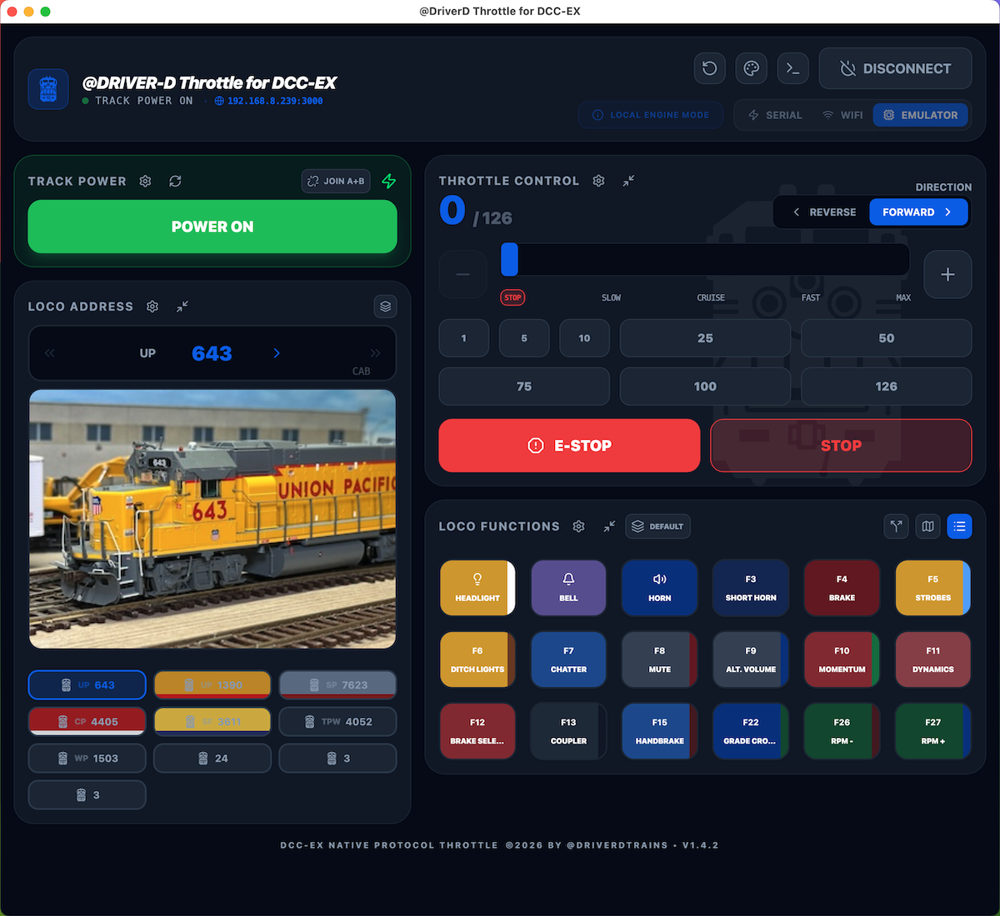

Page 1
Welcome
Welcome to the @DRIVER-D Throttle for DCC-EX! All aboard! We'll start with a quick introduction to the throttle's five basic control panels.

🛠️ Coordinate & Image Tuner Active
Drag pins directly or double-click to place. Select/change the image file for this page below.
Image:
X: --% | Y: --%